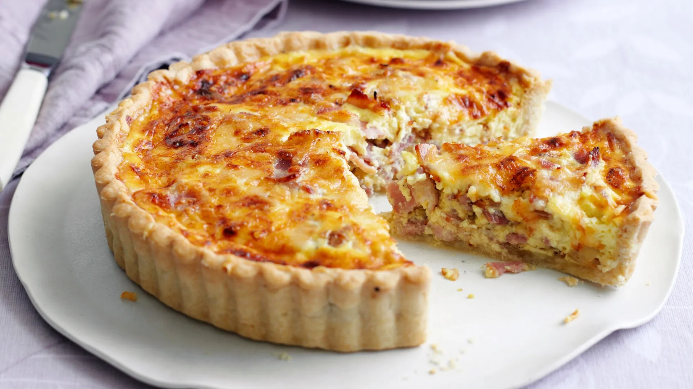

Quiche

Description
The key to making the perfect quiche is simplicity, as you can see with this delicious recipe.
Ingredients
- 175g plain flour
- 100g cold butter, cut into pieces
- 1 egg yolk
- 200g pack lardons, unsmoked or smoked
- 50g gruyère
- 200ml carton crème fraîche
- 200ml double cream
Steps
- For the pastry, put 175g plain flour, 100g cold butter, cut into pieces, 1 egg yolk and 4 tsp cold water into a food processor. Using the pulse button, process until the mix binds.
- Tip the pastry onto a lightly floured surface, gather into a smooth ball, then roll out as thinly as you can.li